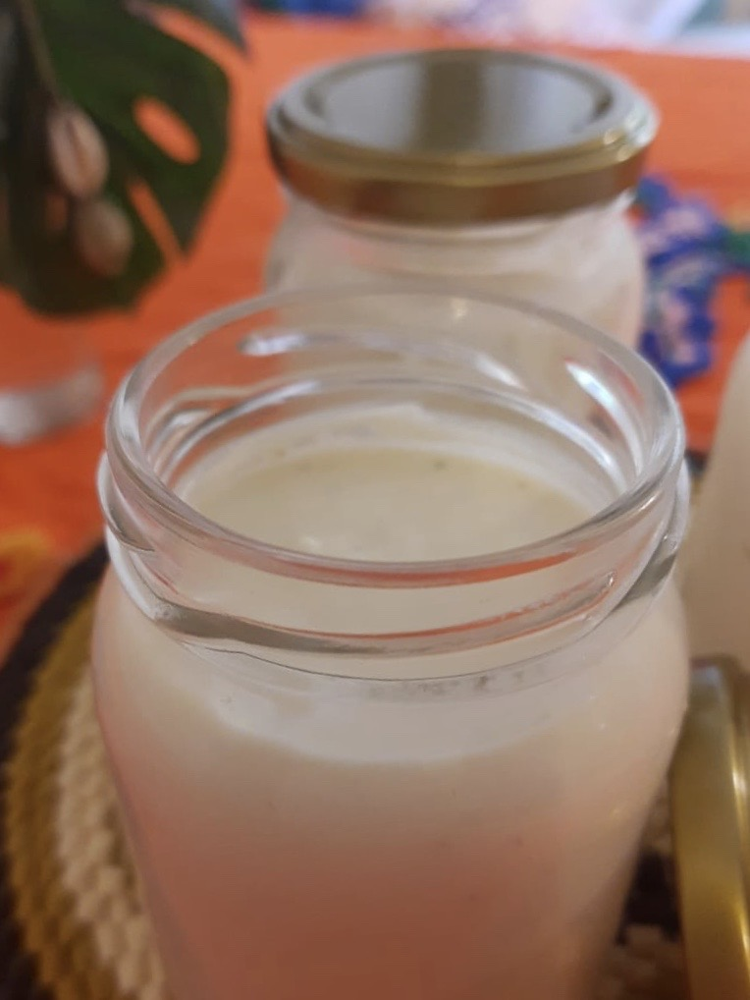
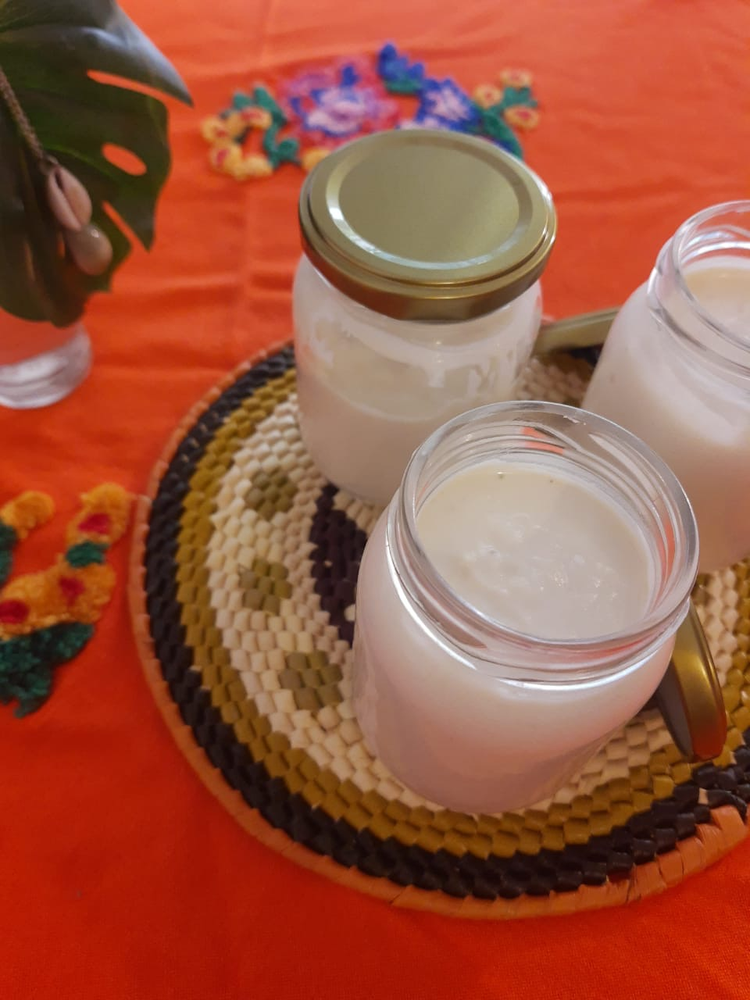
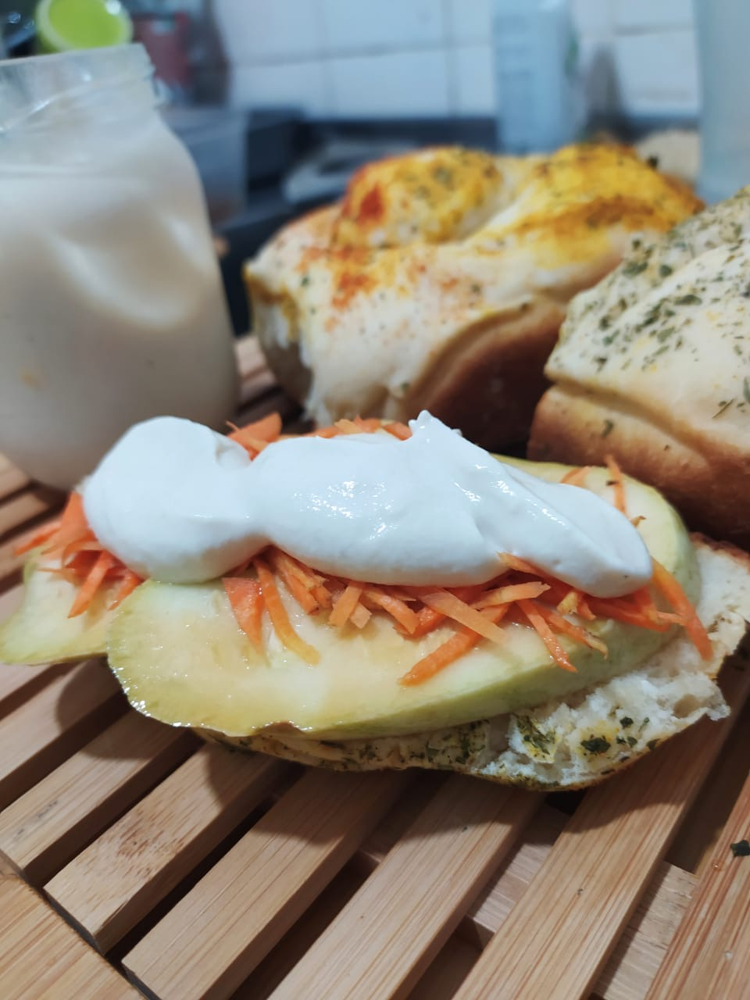
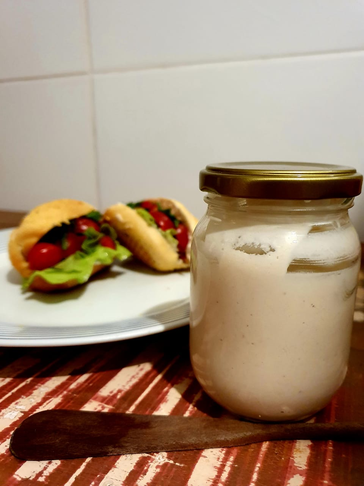
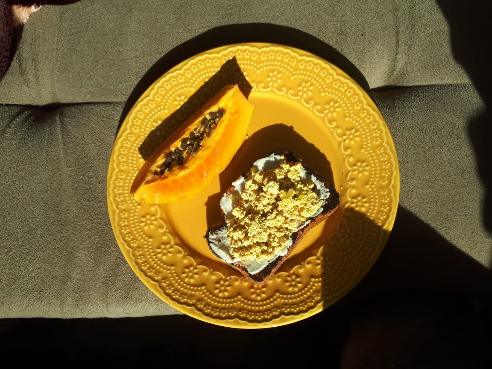
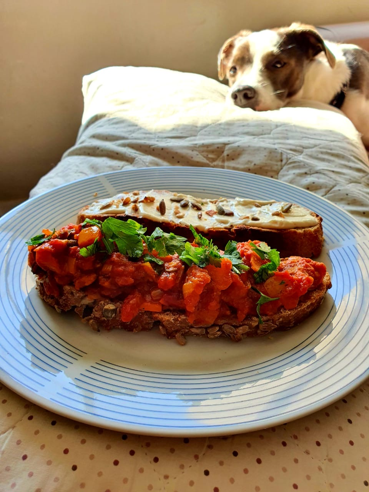
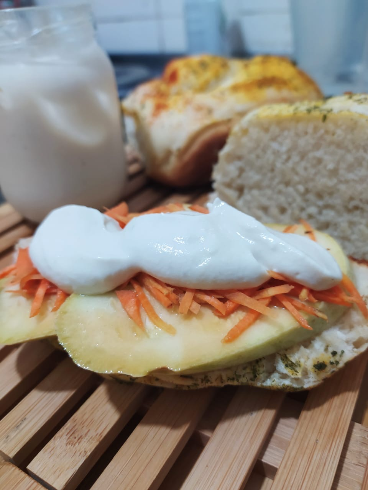

Requeijão Vegano

Feito de castanha de caju e aipim, cremoso e sem conservantes.
Vai bem se utilizado frio ou quente, no pão ou na pizza, na lasanha ou nos legumes.
Produzido artesanalmente e feito especialmente por encomenda, garante um requeijão fresco, novo e sem desperdícios de matéria-prima
Você pode adquirir o requeijão de 268ml por $15 e enviamos na sua casa através da nossa tele pedal. Retirada também pode ser no local.
Galeria
Imagens do requeijão vegano






Saiba mais, leia o manifesto da Caju Cozinha Independente.